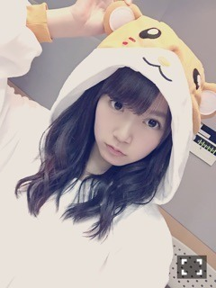
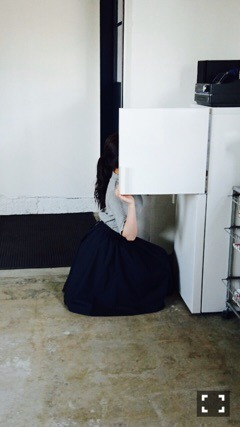

| 2016/02 24 Wed | ひめたん-0o0-その614 |
乃木坂ちゃんデビュー4周年！
BDライブが出来なくて残念だけれど
違う形で皆さんと一緒にお誕生日の瞬間を
迎えられて良かった～(^o^)
いつも乃木坂ちゃんを応援してくれて
本当にありがとう。
出会った時期はそれぞれ
違うと思うけれど
これからもたくさん素敵な思い出を
作っていけたら嬉しいです。
さて、20日早朝から22時深夜まで
「乃木坂46 4th Anniversary
乃木坂46 46時間TV」をお届けしました！
トピックがまーあたくさんあって
何からお話したらいいか迷っちゃいますね～
私個人的な振り返りになってしまいますが
見てないよって方への報告と
見たよって方へのおさらいしていこう！
◯アンダーライブ日程発表
3/19・20 愛知
名古屋国際会議場 センチュリーホール
4/19 福島 福島県文化センター 大ホール
4/20 宮城 東京エレクトロンホール宮城
4/21 岩手 盛岡市民文化ホール 大ホール
4/22 青森 八戸市公会堂 大ホール
4/23 秋田 秋田市文化会館 大ホール
4/24 山形 やまぎんホール(山形県民会館)
3月の愛知は
せいらりんの卒業コンサートでもあります
あと1ヶ月切ったんだね(´;ω;`)
そして4月から始まる「東北シリーズ」！
14thアンダーメンバーなのかな
全国ツアーってこういう形で回るんだね～
この春愛知の方、東北の方は
皆さんの地元に私たちが足を運びますよ～
是非遊びに来てくださいませ。
◯ボウリング大会
全員でボウリング大会しました！
私はお仕事があって残念ながら
決勝戦には参加できなかったのですか
私たちのチーム優勝しちゃったということで
ひめたんのお食事券もあるよ～というのを
生駒ちゃん、かりんちゃんが
メールで教えてくれましたo(^o^)o
◯のぎ声リレー
永島・中元で
名古屋→広島→松山に行きました！
東海地方の皆さん、中国地方の皆さん、
四国地方の皆さん
ご協力ありがとうございました(´;ω;`)♡
私たち、どれだけの方が
来てくれるかなと不安でしたが
いろいろと条件の悪い中
たくさんの方が集まってくれて(´;ω;`)
それぞれの場所であたたかいパワーを
いただきました！エンディング感動した～
そうなんです、それで1日半
東京のスタジオにいなかったんです(笑)

◯ラッキー3福神
健康運ワースト1位らしい......。
会場のどよめきがなんとも。笑
生駒ちゃん、かずみん、
巻き込んでごめんね( >_< )
◯乃木坂電視台「脱！無趣味」
まずは急な告知にも関わらず
ご応募ありがとうございました！
企画内で読まなかったものの中にも
面白そうなのたくさんあったんだよな～
ひとりで10分かー持つかなーとか
思っていたけれど楽しかったo(^o^)o
◯歌王
斉藤由貴さんの「卒業」を歌いました！
歌はコンプレックスだし
緊張しいだから
参加するかどうか迷ったくらい( ´ ･ω･ ` )
でも、カラオケ一緒に
行ったことないメンバーたくさんいたので
歌声聴けたの楽しかった～＊
◯乃木坂46時間TVスペシャルライブ
パナソニックさん協力のライブが
やっと実現できました(^o^)
今回のセットリストは全て
まいまいセレクション。
1st～13thまでを振り返る、
ミニBDライブみたいな形式になりました。
私が披露したのは
「狼に口笛を」「涙がまだ悲しみだった頃」
「そんなバカな......」「生まれたままで」
「悲しみの忘れ方」「乃木坂の詩」
乃木坂には素敵な楽曲が
たくさんあるんだなと
改めて感じたライブでした。
皆さんが各シングルから
一曲ずつ選曲するなら
どんなライブにしますか？
◯のぎ天
一夜限りの復活、のぎ天！
前半は裏渋をロケ、後半はスタジオで
熱い話をたくさんしてたと思います。
なんか、のぎ天ならではのアットホーム感？
懐かしいねこの感じ～と言いながら
一日収録したような気がします( ˆωˆ )
◯乃木坂46の「の」
スタジオにはいませんでしたが
お姫様選抜で2位をいただけたと聞きました
わーい(´,,•ω•,,｀)お姫様選抜♡
汗かき・ぷく顔・好きな声に続いて
何だって選ばれることは光栄でございます。
ひめかって名前も
きっと手伝ってくれたのね
ままありがとう～
投票してくれた皆さん
ありがとうございました(´,,•ω•,,｀)
◯らじらー
日曜の夜はらじらー！サンデー！てことで
聴いてくれたリスナーのみんな
ありがとう！
21時台は46時間TVとも中継繋ぎました
生放送同士ならではですね♪
ゲストに万理華が来てくれたよ！
ハタチになったばかりということで
お祝いできました～おめでとう！
対決企画はねーもう全然ダメだねー(笑)
次回の乃木坂回には
永島聖羅ちゃんが来てくれます。
卒業前に呼べて良かった！必聴！
こんな感じでエンディングまで
盛りだくさんの46時間TVでした。
さあ、デビュー5年目を迎えて
14thシングルの準備にアンダーライブに
個々の活動にと早速みんな頑張っています。
ありがたいことですね( ˇωˇ )
さらに忙しい一年にしたいな。
5年目もよろしくお願いします！

金曜日はソニレコ配信日！
2月のゲストはKさん、
お当番はぷるてんこと寺田蘭世ちゃんです。
チャンネル登録はこちらから(^o^)
～お知らせ～
2/24 SamuraiELO
2/29 ブブカ
3/3 オトナヘノベル
さらにもうひとつ
告知させてください！
名古屋テレビ「BOMBER-E Pナイト」
3/8 深夜0:55～に出演します！
ステファニーさん
松田莉奈さん(X21)と私の3人で
女子会をしてきました( ˆωˆ )

Samurai ELO最新号の美女散歩に
載ってます＼(^o^)／
カフェ店員やってます＼(^o^)／
ちょっと前ブラックコーヒーにハマって
毎日飲みまくってた頃に撮影したから
おお！タイムリー！ってなった！
スタジオの中ずっと良い香りだった♪
まいまい表紙が目印です
よろしくお願いします！

今週土日は京都で握手会ですね～
13th
(＊´・ω・＊)
コメント(1004)
2016/02/24 23:42